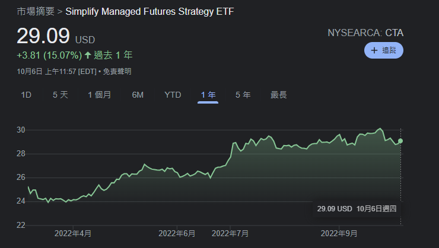

ETF有千百種，尤其在美國，香港ETF市場明顯落後得多，外國有大量sector ETF，完全不用股民選股。若本地有sector ETF，相信能投資者省下大量印花稅，當然，這亦是本地為何沒有sector ETF的原因，因為港交所想賺昂貴的股票印花稅，可悲也。除了sector ETF，外國亦有主動管理型ETF、另類資產ETF、資產配置ETF、高息股ETF、大中小型股ETF、期權ETF、smart beta ETF、債券ETF等等，數之不盡，總之香港就是落後，有成交的，只有指數ETF。
為什麼突然想分享ETF呢？最理想的，當然是想大家學會algo trade，自己擁有一套系統買賣，不要再人手主觀炒，或者長坐。奈何，並非人人有決心去學習。同時，又眼見身邊朋友只懂長揸正股，然後一直輸錢，慘得很，勸又不聽，叫他學習algo trade又不肯，然後繼續看新聞，看圖表… 因此，只好退而求其次，為大家介紹一些比較特別的ETF，讓大家能在熊市減少損失。
事實上，多了解不同ETF的好處多得很，一來能增加組合多樣性，分散風險；二來增加金融知識，了解基金們在用甚麼樣的策略；三來絕對有助大家brainstorm量化策略。
ETF這topic 我可以寫10萬字，不過，這次則打算分享3類較為特別的ETF。這3類ETF當然不是long-biased的股票ETF，如大中小型股ETF、sector ETF、區域ETF等等，這些介紹來也沒用，無謂再間接增加大家手上的long exposure。因此，即將介紹的ETF為主動管理型，以及為長短並用型。我相信熊市主動long short ETF有可能會比被動long-biased ETF更好。
想介紹的第一類，為managed futures / CTA類ETF，即會以期貨長短倉出擊，簡單講，即炒期指的基金。AUM大的有DBMF、KMLM及CTA。下圖為3者表現（本想盡量show 5年圖，但DBMF只有4年歷史，KMLM只有2年歷史，而CTA則只有1年歷史）：

Managed futures ETF好處在於長短並用，與股市極低相關性。不過，大多背後做momentum，如果所有市場（金股匯）永久橫行，那就可能會出現虧損。不過，過去一年spy跌14%，DBMF升21%，KMLM升32%，CTA升15%。
第二類，為long short equity ETF。這個策略大家應該聽我提過100次了，即pair trade，買入看好股票，沽空看淡股票，對沖market beta，只賺alpha。大AUM代表有FTLS。過去一年spy跌14%，FTLS保持不變。
第三類，為其中一隻另類ETF，全名為S&P500 Downside Hedged ETF，代號為PHDG。當中一手持有SP500長倉，另一邊買入VIX期貨，以對沖股災風險。過去一年spy跌14%，PHDG只是微跌（畢竟有極大long exposure，微跌已經很好了）。下圖為其表現，最利害是，2020年3月終極股災中，它絲毫無損。因此，若你覺得有點可能性會有大股災發生，PHDG就是一個「戴頭盔」地長揸股票的選擇。
以上就是3類想為大家介紹的ETF。真心希望能為大家開闊眼界，因為眼見散戶對市場認識太少，來來去去只懂2800、TQQQ、SQQQ，問他們知不知道甚麼是震盪損耗、延期損耗、轉倉損耗，又全然不知；叫他們看舊專欄，又懶而不看；現在輸錢，又喊。我想幫也難。
進階補充一點，ETF的功用不止只是diversify portfolio，我經常也會用ETF表現來作proxy，建構量化訊號炒賣，舊專欄有示範過了，可以留意一下。
最後，希望大家自行research一下以上ETF的內容與策略，以及man fee、liquidity、track record等等，此非投資建議，不可盲跟。